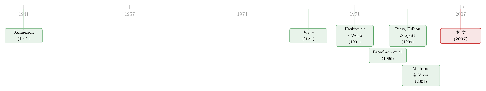

教科书里那个「不存在」的市场，其实每天都在东京开门
本文读的是 Eaves & Williams (2007, Review of Financial Studies)：经济学教科书里那个被当成「虚构」的瓦尔拉斯试探拍卖 (Walrasian tâtonnement auction, WTA)，其实在东京谷物交易所 (Tokyo Grain Exchange, TGE) 以 itayose（板寄せ）之名每天运转。作者拿到了 1997–1998 年 15,677 场玉米与红豆期货拍卖的电子逐笔记录，发现它的价格形成竟然和连续双向拍卖 (continuous double auction) 高度相似——临时价格是有信息的，欺骗性报价极少，而真正让信息快速进入价格的，是「拍卖随时可能结束」的风险与更均匀的信息分布。
1 一个「只活在黑板上」的市场
每一个学过微观经济学的人，脑子里都装着这样一个画面：市场中央站着一位拍卖人 (auctioneer)，他喊出一个价格，所有交易者把自己在这个价格下想买、想卖的数量报上来；拍卖人看一眼总的超额需求 (excess demand)，朝着它的方向把价格挪一挪，再喊一遍，如此往复，直到供需相等才成交。
这就是瓦尔拉斯 (Walras, 1874) 留给我们的试探拍卖 (tâtonnement，法语「摸索」之意)。它几乎垄断了经济学家对「价格是怎么形成的」这件事的全部想象。
但有意思的是——没有人真的相信它存在。
O'Hara (2003) 在讲市场微观结构时，干脆把 WTA 当成一个纯粹的「理论陪衬」：「基本的瓦尔拉斯故事，是从市场的实际运作机制中抽象出来的。交易者把需求交给一个虚构的拍卖人，由他来汇总大家的买卖意愿。」注意那个词——虚构的 (fictitious)。更尴尬的是，Walker (2001) 还专门考证过：连瓦尔拉斯本人取经的那个十九世纪巴黎证券交易所，其实压根没用过拍卖人。
于是我们有了一个奇特的局面：一套统治了一个多世纪的价格形成理论，却找不到一个真实的市场来检验它。它到底描述对了没有？没人知道，因为没地方看。
首先，这篇论文最大的贡献，就是告诉你：这个市场存在，而且就在东京。
2 itayose：一个不叫 WTA 的 WTA
东京谷物交易所挂牌的，是芝加哥期货交易所 (CBOT) 那些在交易池里连续叫价的同类商品——玉米、大豆、红豆、生糖。但它定价的方式叫 itayose（可粗略译作「场内集合竞价 / session trading」），一种历史悠久的日本机制。作者的判断很干脆：itayose 是一个 WTA——除了名字之外，处处都是。
它怎么运作？一位真人拍卖人坐在交易所大楼里，按小时循环主持，一场拍卖大约只持续一分钟。这些拍卖不是用来给连续交易「打标点」的（很多股票交易所的开盘集合竞价就是这种角色），而是唯一的价格发现机制——不在这些 session 里，期货就不交易。
拍卖人先根据上一场的均衡价、以及相关合约在间隔期内的价格变动，喊出一个临时价格 (provisional price)。约七十家期货佣金商 (futures commission merchants, FCMs) 和少数独立交易者随即报上想买想卖的数量，所有报价对所有参与者实时透明。拍卖人看着超额需求，每次只朝失衡方向挪动一个 10 日元的最小跳价 (tick)，而不是一步挪到他估计的均衡。
接着，一个自然的问题是：拍卖什么时候结束？这正是 itayose 最精巧的地方。当拍卖人觉得当前价格差不多就是均衡时，他在终端上闪出一个 「OK」 信号。只要此时有任何一个（或几个合起来的）交易者把超额需求打到零，拍卖立刻结束，所有挂着的累计报价瞬间变成真实成交。若没人接这一棒，拍卖人就撤掉「OK」、继续挪价。
注意这里和教科书的三处关键背离，也是和巴黎 Bourse 开盘 (Biais, Hillion, and Spatt, 1999) 的三处区别：
- 没有时间优先。交易者可以随时修改自己的累计报价，且修改时不必「讲道理」——价格涨了，他完全可以反手加大买单。
- 没有事先约定的终点。谁都不知道这一场什么时候会结束（巴黎 Bourse 的预开盘则是雷打不动 10:00 收尾）。
- 拍卖本身要花时间。「摸索」的过程是真实流逝的几十秒，而不是一瞬间的供需曲线相交。
正因为时间在流逝，价格形成就有了动态 (dynamics)——而这，恰恰是检验理论的战场。
3 教科书的预言，与它的破产
自 Samuelson (1941) 把试探过程形式化 (formalize) 以来，绝大多数理论家都把 WTA 的动态想象成一个差分方程 (difference equation)：总超额需求是临时价格的一个结构性函数 (structural function)，拍卖人只盯着当前失衡、按比例反向调价，步长取极限便成了微分方程。
把这套想象拆开，它隐含三个极强的假设：
$$ ED_t = D(p_t), \qquad \Delta p_{t} = \lambda \cdot ED_t $$
这里 \(ED_t\) 是 \(t\) 时刻的超额需求，\(p_t\) 是临时价格，\(\lambda>0\) 是拍卖人的调价速度。第一，交易者在每个临时价格下，老老实实报出「就这个价格而言」的真实数量——他们既不从失衡的大小里推断什么，也不预判拍卖人下一步会怎么动。第二，拍卖人只看当下的失衡。第三，历史不重要——这套动态活脱脱就是一个数值算法，History does not matter。
然后，作者把 Table 1 那场真实的拍卖摆出来，预言当场破产。
那是 1997 年 10 月 1 日最后一场 session、11 月交割的玉米合约。均衡价 16,000 日元，从 15,950 起步、每次 10 日元、走了五级。全程 40 秒，37 笔交易者报价、12 次拍卖人动作。问题出在哪？教科书说，价格往上走，超额需求就该单调递减才对。可现实里，拍卖人每一次上调价格时看到的失衡是：+34、+41、+33、+38、+36——根本不单调。
这意味着什么？意味着交易者的报价不是对当前临时价格的机械反应。他们在看着失衡、看着别人、预判拍卖人的下一步动作——他们在博弈，而不是在填一张需求表。一个 +27 的失衡，拍卖人足足等了 12 秒才上调价格；调价的时间间隔是 16、5、6、5、5、3 秒，长短不一。拍卖人也在博弈——他知道交易者的反应有滞后，于是自己也带着滞后去回应。
于是反转出现了：这个被理论判定为「无历史、纯算法」的市场，跑起来竟然像一个有记忆、有学习、有策略的连续市场。
4 真正关键的一步：用 VAR 给 WTA 拍 X 光
但真正关键的一步在于，怎么把这种「像连续市场」从一个轶事变成一个可比较、可证伪的命题？
作者的招数，是把研究连续市场的标准工具直接搬过来。Hasbrouck (1991) 当年用向量自回归 (vector autoregression, VAR) 给纽约证券交易所的订单流与价格做过经典的动态分解；既然如此，那就给 TGE 拍卖里「交易者累计报价的总量」与「拍卖人对临时价格的调整」也建一个 VAR。逻辑链条非常干净：
- 如果 TGE 拍卖里的超额需求与临时价格呈现出强自回归结构——也就是历史确实重要——那么 Samuelson 的那套形式化就得重写。
- 如果一场 TGE 拍卖的中段，看上去和一个由做市商主导的连续市场的午盘别无二致，那么所谓两种市场微观结构的根本差异，不过是理论抽象出来的幻觉。
这是本文方法论上的核心贡献：把一个被认为「不连续」的机制，放进研究「连续」机制的同一台 X 光机里，看它的骨架是不是一样。 而答案是——出乎意料地相似。在连续拍卖里，成交对价格有持续性冲击 (persistent impact)，这是「成交携带信息」的标志；在 TGE 里，报价（超额需求的变化）对临时价格同样有持续性冲击。临时价格不是噪声，而是对最终成交价的有信息的信号 (informative signal)——这正说明交易者是认真对待它的，而非拿它来骗人。
5 那么，骗子去哪了？
这就要回到悬在 WTA 头顶最久的一桩指控。
理论家们早就警告过 WTA 的「原罪」：它鼓励欺骗 (deception)。Otani and Sicilian (1990)、Goldberg and Tenario (1997) 论证过，连小交易者都有动机低报 (under-reveal) 自己的真实意愿；Medrano and Vives (2001) 则担心大的知情交易者会用与真实意图相反的报价 (contrarian pledges) 去误导别人。而这些担忧，似乎在实验室里被坐实了——Joyce (1984, 1998)、Bronfman et al. (1996) 的实验市场里，欺骗性报价确实泛滥。
可在东京的真实拍卖里，欺骗几乎看不见。为什么？
作者给了两个原因，都朴素得令人信服。
第一，他们是熟人，而且明天还要再来。 TGE 的 FCM 们年复一年地报价，坐镇的「house trader」一场接一场地下单，主持拍卖的交易所员工是常驻的。一锤子买卖里骗一把或许划算，但在一个无限重复的博弈里，欺骗的长期代价远大于一次性的便宜。实验室里的被试没有这个「未来的影子」，于是骗术横行——这恰恰说明，实验室的发现可能更多是制度的产物，而非人性的铁律。
第二，拍卖人手里有「自由裁量权」。 这是 itayose 区别于死板算法的灵魂。他可以判断什么时候挪价、挪多少、什么时候打出「OK」、什么时候撤掉。这套灵活性，加上「OK」一旦亮起拍卖随时可能结束的风险，让任何想靠虚假报价拖延、操纵的人都得掂量：你刚挂出一个骗人的大单，可能下一秒就被别人接成了真实成交。
OK 信号因此成了整个机制的题眼。 它其实是拍卖人对该合约价值不确定性的一个可观测信号，同时也是交易者面临的「拍卖即将结束」之风险的代理变量。数据上看，它用得相当频繁：在 6073 场玉米拍卖里，拍卖人在 45,339 个临时价格中亮过 25,814 次「OK」；在 9604 场红豆拍卖里，58,954 个临时价格里亮过 47,126 次。而且越是成交清淡的合约，拍卖人用「OK」越「凶」——亮了之后还得再改价的比例更高。即便是 TGE 最活跃的第六持仓玉米，平均也有 29.77% 的价格调整发生在第一次「OK」之后，还有 9.32% 的交易者是在「OK」之后才第一次出手。
换句话说，「OK」之后的那段时间，正是信息最后、也最集中地涌入价格的窗口。结束的风险逼着持有私人信息的人赶紧亮牌，而更均匀的信息分布（玉米与红豆这两种商品、以及拍卖的先后排序，天然提供了「信息分散程度」的对照）让没有一家能靠信息垄断去操纵。两者合力，提高了市场的深度 (depth) 与信息进入价格的速度。
这里有一个对市场设计的普适启示：让市场更诚实的，未必是更严的规则，而可能是重复博弈 + 一点恰到好处的不确定性。把「拍卖何时结束」做成内生且不可预知的，比任何「禁止虚假报价」的禁令都更能抑制操纵。关于「不确定的截止时间如何改变报价博弈」，可对照读巴黎 Bourse 预开盘那条文献——那里的截止时间是固定的 10:00，行为就大不一样（Biais, Hillion, and Spatt, 1999；Davies, 2003）。
6 数据
把这件事做扎实，靠的是一份此前无人能碰的数据。
- 样本：1997 年 1 月至 1998 年 2 月，东京谷物交易所玉米与红豆期货合约的电子逐笔记录 (electronic transcripts)。TGE 自 1988 年起就电子化拍卖，因此留下了完整痕迹。
- 规模：
15,677场拍卖，涵盖104,293个临时价格上的1,304,322笔报价。这是第一份能够观察 WTA 内部价格形成全过程的数据——每个交易者在每个临时价格上的报价、超额需求的序列、以及每个事件发生的精确时刻，全部在案。（此前 Webb (1991) 研究过 TGE 大豆三个月的临时价格，但他的数据没有逐个交易者的报价、没有超额需求序列、也没有时间戳。） - 观测单位：可以细到「一场拍卖内、每一秒、每一笔报价」。Table 2 那场 1998 年 9 月玉米合约的拍卖就是按秒展开的——41 秒里 52 个交易者下了 150 笔报价，峰值失衡
+462出现在第 13 秒，最终643手成交。 - 清洗：剔除了记录损坏（55 场）、出现明显错误或计算机延迟（249 场）、以及触及当日价格波动限制 (price-move limit) 而以抽签收尾的 862 场（这本身是 TGE 一个有趣的特征）。
一个让聚合变得合理的事实是：这 14 个月里玉米和红豆的价格水平与价差相当稳定，且 Table 3 的均值显示，拍卖在一天中的不同时段几乎没有差别——唯一实质性的差异来自合约的持仓位置 (position)。越靠后的持仓越活跃：第六持仓玉米平均每场有 53.36 个交易者、最终成交 729.81 手，而第一持仓只有 22.29 个交易者、87.27 手。所以后文的分析，除了按持仓分组，其余 14 个月一律聚合。
7 文献脉络
这篇论文坐落在两条河流的交汇处。
一条是理论的河。 上游是 Walras (1874) 给出 tâtonnement 的原始构想，Samuelson (1941) 把它形式化成稳定性分析的差分方程，奠定了「拍卖人按失衡比例调价」的标准范式。沿流而下，理论家们开始拆这套机制的台子：Otani and Sicilian (1990)、Goldberg and Tenario (1997) 指出小交易者有低报激励，Medrano and Vives (2001) 指出大交易者能反向操纵，Vives (1995) 则关心信息揭示的速度。与此并行，实验经济学家 Joyce (1984)、Bronfman et al. (1996) 在实验室里「证实」了欺骗的普遍。

另一条是实证市场微观结构的河。 Hasbrouck (1991) 的 VAR 分解、Madhavan (1992) 对交易机制的比较、O'Hara (2003) 对流动性与价格发现的总结，再到 Biais, Hillion, and Spatt (1999) 对巴黎 Bourse 预开盘的细致解剖——这条河研究的是连续市场的动态。
本文的位置，是把第二条河的工具，引到第一条河从未有过真实数据的河床上。它既不是纯理论，也不是又一个实验，而是用一个真实运转的 WTA，去同时回应两边的命题：对理论家说，你们担心的欺骗在重复博弈与拍卖人裁量权下大体消失了；对实证派说，一个「不连续」的集合机制，其价格形成竟与你们熟悉的连续市场如此相似。Webb (1991) 是这条交汇处最早的探路者，而本文凭借完整的逐笔数据真正走了进去。
8 评论与延伸（Q&A + 研究方向）
(a) 几个可能的疑问
Q：itayose 和股票交易所的开盘集合竞价 (opening call auction) 到底差在哪？凭什么一个算 WTA、一个不算？
差三点，作者说得很清楚。其一，集合竞价是先收集供需曲线、再交叉求出价格（数量→价格）；WTA 是反过来，拍卖人先喊价、交易者再报量（价格→数量），且要反复试探。其二，集合竞价有固定的截止时间（如巴黎 10:00），WTA 没人知道何时结束。其三，集合竞价之后紧接着连续交易，而 itayose 是唯一的价格发现机制，身后没有连续市场兜底。正是这三点，让 itayose 成了能检验理论的「纯」WTA。
Q：既然报价随时可改、又没有时间优先，那一场拍卖会不会永远收不了尾？
不会，靠的是「OK + 内生终止」的设计。只要「OK」亮着、且有人把超额需求打到零，拍卖瞬间锁定成交；几乎总是单个交易者按下「take all remaining」键、或报一个正好等于失衡反向数量的单子来终结全场。这种「随时可能被一棒收尾」的风险，反而成了纪律——它让拖延和虚报变得危险。
Q：作者凭什么说欺骗很少？他们真的逐个交易者去抓骗子了吗？
没有，而且作者很诚实地承认这一点：识别具体哪个交易者在低报或反向操纵，超出了本文范围。本文做的是聚合层面的判断——给海量报价分类，求出欺骗性报价可能存在的上限。逻辑是：若拍卖动态像连续市场、且多数交易者只报寥寥几笔、这几笔又都合乎临时价格的变化，那么欺骗就不太可能普遍；而且欺骗本会让早期临时价格充满噪声，但数据显示临时价格是有信息的。这是一个间接但自洽的论证，要抓具体的骗子，得另起一篇。
Q：玉米和红豆为什么要分开看？这对结论有什么用？
这两种商品提供了一个天然的「信息分散程度」对照——加上拍卖的先后排序，构成了两组对比，用来在聚合行为上判断欺骗是否广泛。数据上它们也确实不同：红豆每场交易者更少（第一持仓仅 9.84 个）、每笔合约数更小，拍卖人用「OK」更频繁（红豆
47,126/58,954的比例明显高于玉米）。这种差异本身就是识别信息分布如何影响价格发现的杠杆。
Q：「拍卖人每次只挪一个 tick」会不会人为拖慢了价格发现，让结论失真？
最小跳价确实部分解释了调价的滞后，但作者强调这不是全部。拍卖人变长短不一的反应时间，更多源于他清楚交易者的反应也有（且是可变的）滞后——这是策略性互动，不是技术约束。换句话说，tick 制度设定了下限，但真正驱动动态的是双方的博弈。
Q：这套结论能外推到股票、外汇这些更大的市场吗？
要谨慎。TGE 的关键前提是参与者高度重复、人数有限（约 70 家 FCM）、且全透明。正是「熟人 + 重复博弈」压住了欺骗。换到匿名、海量、一次性参与者的市场，这台「诚实机器」未必还转得动。所以本文更像是给理论提供了一个存在性证明与边界条件，而非一个普适的市场设计蓝图。
(b) 几个可能的研究问题与提案
1. 把「欺骗」从聚合下沉到个体。 【经济故事】本文留了一个最大的口子：到底谁在低报、谁在反向操纵？有了逐个交易者、带时间戳的报价，完全可以先用 VAR 定位「欺骗可能有效」的窗口（比如「OK」亮起前后），再看哪些交易者的报价在这些窗口里系统性偏离其最终成交方向。 【可行性】高。数据本文已证存在且粒度足够；识别可借「OK 信号」作为外生的「结束风险」冲击，做事件研究。难点在于区分「策略性反向报价」与「真实的需求修正」，需要用同一交易者跨多场拍卖的行为做基准。
2. 把 itayose 的「内生终止」机制搬到公司债的场外大宗交易。 【经济故事】公司债市场不透明、做市商主导、流动性时常枯竭。itayose 的核心洞见是——不可预知的截止时间 + 重复博弈能抑制操纵、提升深度。一个自然的问题是：若把这种「随时可能成交、谁都不知何时结束」的集合机制引入公司债，能否改善价格发现？ 【可行性】中。可先用 TRACE 等逐笔数据，对比公司债现行 RFQ/做市机制与一个模拟的 itayose 式集合拍卖在价格冲击上的差异；真正的因果需要一次交易场所的机制改革作为自然实验，可遇不可求。（流动性危机里公司债的脆弱，可参见《差点死掉的那个市场：一场公司债流动性危机的微观解剖》。）
3. 「OK 信号」作为不确定性的可观测代理，能否预测后续波动？ 【经济故事】作者把「OK」解读为拍卖人对合约价值不确定性的信号。若如此，一场拍卖里「OK 亮起后仍需改价的次数」就该与该合约未来的已实现波动率正相关——这相当于给了我们一个来自做市端、而非期权端的不确定性度量。 【可行性】高。变量在 Table 3 已现成（「OK 后价格调整比例」），只需把它和后续 session 的价格变动对接做预测回归。识别清晰，纯数据工作。
4. 重复博弈到底压住了多少欺骗？用参与者进出做准自然实验。 【经济故事】本文的因果故事是「熟人 + 未来的影子」抑制欺骗。那么当一个新 FCM 刚进场、或一个老 FCM 即将退出时，「未来的影子」变短，欺骗性报价是否抬头？ 【可行性】中。需要 FCM 层面的进出名单与身份标记；若 TGE 会员变动数据可得，可用「会员任期」作为「未来影子长度」的代理，做 DiD。诚实地说，会员进出本身可能内生于其交易表现，需要小心。
5. 外资 / 跨市场套利者进入后，TGE 拍卖的信息结构会怎样变？ 【经济故事】TGE 的玉米、大豆同时在 CBOT 连续交易（Holder, Pace, and Tomas, 2002 讨论过这种「等价合约」的互补/替代关系）。当跨市场套利者把芝加哥的信息带进东京的板寄せ，临时价格的信息含量、以及「OK 后」的信息涌入节奏会被改写吗？ 【可行性】中。需要把 TGE 逐笔数据与 CBOT 同期数据对齐，用美盘隔夜变动作为外生信息冲击，看 TGE 临时价格的反应速度。数据对接是主要成本，但识别思路干净。
9 我的判断
这是一篇「换了个地方看世界」型的论文，它的力量不在花哨的计量，而在那份没人见过的数据和一个被忽略了一个世纪的事实：教科书里那个虚构的市场，真的存在。 它最漂亮的贡献有两点。其一，方法论上把 VAR 这把研究连续市场的尺子，量到了一个「不连续」的集合机制上，从而让「两种市场到底有没有本质区别」第一次可以被实证回答——答案是惊人地相似。其二，它把理论与实验长期担忧的「欺骗」问题，用重复博弈 + 拍卖人裁量权 + 内生终止这三件朴素的制度安排化解掉了，并顺手指出：实验室里的欺骗，很可能是「缺少未来的影子」这一制度缺陷的产物，而非人性使然。
对识别的担忧有三。第一，欺骗「很少」是一个聚合层面、且自承为上限的论断，缺了个体层面的直接证据——作者很坦诚，但这毕竟是本文最核心的卖点之一，读者只能接受一个间接论证。第二，外部效度有限：结论高度依赖「参与者少而重复、全透明」这组前提，能否推广到匿名大市场存疑。第三，触及价格波动限制而被剔除的 862 场，恰恰可能是信息最极端、最容易出现操纵的时刻，把它们删掉或许让样本偏向了「温和」的拍卖。
后续最想看到的，是把这份逐笔数据真正用到个体层面：谁在「OK」亮起前的窗口里反向报价、又赚到了什么？以及把 itayose 的「内生终止」思想，作为一种市场设计原则，搬到今天真正缺流动性、又苦于操纵的市场（公司债、某些大宗商品场外市场）里去做反事实评估。一个活了一百五十年的「黑板模型」，原来一直在东京安静地运转——它值得被更彻底地读一遍。
参考文献
- Biais, B., P. Hillion, and C. Spatt (1999). Price Discovery and Learning during the Preopening Period in the Paris Bourse. Journal of Political Economy 107, 1218–1249.
- Bronfman, C., K. McCabe, D. Porter, S. Rassenti, and V. Smith (1996). An Experimental Examination of the Walrasian Tâtonnement Mechanism. RAND Journal of Economics 27, 681–699.
- Cheng, J. Q., and M. P. Wellman (1998). The WALRAS Algorithm: A Convergent Distributed Implementation of General Equilibrium Outcomes. Computational Economics 12, 1–24.
- Davies, R. J. (2003). The Toronto Stock Exchange Preopening Session. Journal of Financial Markets 6, 491–516.
- Goldberg, L., and R. Tenario (1997). Strategic Trading in a Two-Sided Foreign Exchange Auction. Journal of International Economics 47, 299–326.
- Hasbrouck, J. (1991). Measuring the Information Content of Stock Trades. Journal of Finance 46, 179–207.
- Holder, M., R. D. Pace, and M. Tomas III (2002). Complements or Substitutes? Equivalent Futures Contract Markets — The Case of Corn and Soybeans Futures on U.S. and Japanese Exchanges. Journal of Futures Markets 22, 355–370.
- Joyce, P. (1984). The Walrasian Tâtonnement Mechanism and Information. RAND Journal of Economics 15, 416–425.
- Madhavan, A. (1992). Trading Mechanisms in Securities Markets. Journal of Finance 47, 607–641.
- Medrano, L. A., and X. Vives (2001). Strategic Behavior and Price Discovery. RAND Journal of Economics 32, 221–248.
- O'Hara, M. (2003). Liquidity and Price Discovery. Journal of Finance 58, 1335–1354.
- Otani, Y., and J. Sicilian (1990). Limit Properties of Equilibrium Allocations of Walrasian Strategic Games. Journal of Economic Theory 51, 295–312.
- Samuelson, P. A. (1941). The Stability of Equilibrium: Comparative Statics and Dynamics. Econometrica 9, 97–120.
- Vives, X. (1995). The Speed of Information Revelation in a Financial Market Mechanism. Journal of Economic Theory 67, 178–204.
- Walker, D. A. (2001). A Factual Account of the Functioning of the Nineteenth-Century Paris Bourse. European Journal of the History of Economic Thought 8, 186–207.
- Walras, L. (1874). Éléments d'Économie Politique Pure. L. Cobaz, Lausanne.
- Webb, R. (1991). The Behavior of 'False' Futures Prices. Journal of Futures Markets 11, 651–668.